Page 1 / 原始页码 781
第 41 章 植物如何适应环境生长
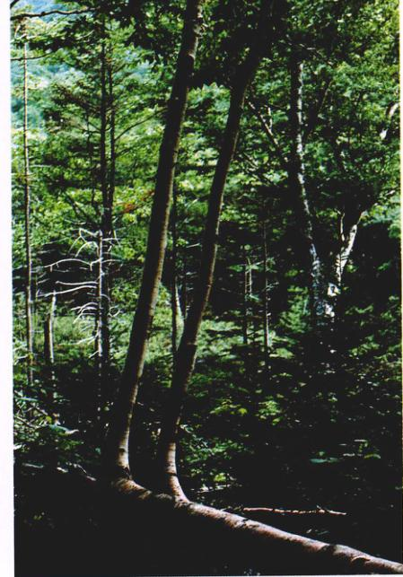
图 41.1 环境因素影响植物的生长 这棵倒地树的枝条由于受重力和光照的影响而挺拔地向上生长。
所有的生物都能感受环境的变化并与环境相互作用，植物尤其如此。植物的生存和生长都严格受到水、风和光等非生物因子的影响。本章我们将研究植物是如何感知上述因子，并转换这些信号，从而产生最佳的生理、生长或者发育的反应的。激素对于植物体感应环境变化，并在体内传递信号以便对环境做出反应方面发挥了重要作用。局部环境对植物生长的影响，使一种植物成体植株的形态有多种变化形式（图 41.1）。精确协调的反应不仅使得植物能带病原体生存，容忍环境一天天地变迁，而且也能决定一株显花植物何时开花。依次构建一朵花的完整过程为第42章将要讨论的植物复杂的生殖策略搭建了平台。
Page 2 / 原始页码 782
41.1 植物的生长经常受环境因素的影响
41.1.1 生长反应
植物的生长方式往往受环境信号的影响。向性 (tropism，来自希腊词 trope，意为“转向”) 是植物通常来自同一方向的外部刺激的正或负的生长反应。有些反应与刺激的方向性是无关的，即所谓的感性运动 (nastic movement)。如豌豆的卷须当受到触摸时总是朝一个方向卷曲。相反，向性运动则具方向性。由于植物不像动物那样能主动避开不适宜的环境条件，因而向性运动是对此的重要补充。每一种物种枝条的多姿多彩也归功于向性运动。这里我们讨论植物向性运动的3个主要类型：向光性、向重力和向触性。向性运动尤其吸引人，因为它们向我们提出挑战，即如何把环境信号与细胞对信号的感应、信号的生化转化途径和最终改变的生长反应联系起来。像光形态建成 (photomorphogenesis) 这样的无方向性反应则是更复杂的变化造成的。
1) 向光性和光形态建成
向光性 (phototropism) 反应是指生长的茎及植株的其他部分向光源弯曲（图 41.2）的现象。一般来说，茎总是向着光源生长，即属于正向光性，而大多数根一般对光不敏感。只有一些特殊情形，根才表现出微弱的负向光性。茎的向光性反应显然具有适应意义，它使植物更加充分地暴露在有效光下。它在决定植株器官发育以及形态方面也起重要作用。个别叶片也呈现出向光性。叶子的位置对植物光合作用的效率起决定作用。植物的向光性生长主要（即使不是全部）与生长激素有关（本章后部分讨论）。光形态建成是光诱导的发育过程，包括种子的萌发。
向光性和光形态建成的第一步是感受光。光受体感应各种不同波长的光，常见的是蓝光和红光。蓝光的受体很独特，我们在研究植物是如何“看见”蓝光的。蓝光诱发向光性反应，而红光诱发光形态建成。人们已经获悉植物是如何“看见”红光的，以及这种反应如何通过一定信号途径影响植物生长的。植物有一种包含色素的蛋白质——光敏色素 (phytochrome)，它以两种可互相互转化的形态存在，即 Pr 和 Pfr。光敏色素以 Pr 形态存在时吸收红光，以 Pfr 形态存在时吸收红外光。一分子 Pr 吸收一个光子光 (660 nm) 后，它马上转化成一分子 Pfr；同样，一分子 Pfr 吸收一个红外光光子 (730 nm) 后，也马上转化成一分子 Pr。Pfr 是有生物活性的，而 Pr 没有。也就是说，当 Pfr 存在时，一个受光敏色素影响的反应就能进行。当大部分 Pfr 被 Pr 取代时，反应也就停止了（图 41.3）。虽然我们在这里仅提及一种光敏色素分子，但值得注意的是，目前已经鉴定出了多种不同的光敏色素，且各具有特定的生物学功能。
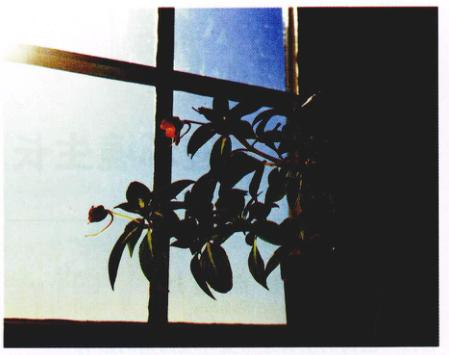
图 41.2 向光性 向光生长的凤仙花 (Impatiens)。
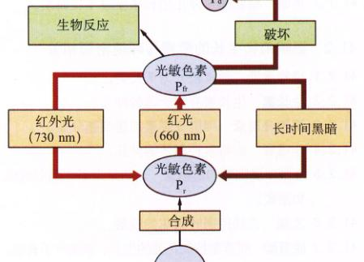
图 41.3 光敏色素是如何作用的 Pr 形式的光敏色素由氨基酸合成。当接受红光时，Pr 转变为能引起植物反应的活性形式 Pfr。当 Pfr 暴露在红外光下时，它又转化成 Pr，在黑暗中 Pfr 或转变为 Pr，或被破坏。被破坏的产物用 Pd 表示。
光敏色素是一种光受体，但它并不对光产生直接的反应。1959年，美国农业研究中心 (Beltsville, Maryland) 的 Harry A. Borthwick 及其同事确切证实了光敏色素的存在。研究表明此分子含有两个基团：较小的基团对光敏感，较大的则是蛋白质分子。这个蛋白质分子能启动信号转导，从而引起相应的向性运动。所有的植物以及一些绿藻都具有光敏色素，但是细菌、真菌以及原生生物（少数绿藻除外）则没有。感知光的光敏色素系统很可能由绿藻进化而来，并且存在于植物的共同祖先当中。
Page 3 / 原始页码 783
植物的许多生长反应都与光敏色素有关。例如，红外光能抑制很多植物种子的萌发，而红光则正好相反。因为叶绿素强烈吸收红光却不吸收红外光，所以穿过遮掩的大树的绿叶投射到种子上的光能抑制种子萌发。相反，那些散落在已经脱落了树叶的落叶树下的种子，在春季更容易萌发。落叶腐烂后，幼苗暴露在直射的阳光下，这大大提高了幼苗存活的几率。
有关这类关系的第二个例子是黄化的 (etiolated) 幼苗（黑暗处理过的苍白细弱的幼苗）枝条的伸长。当黄花幼苗放在阳光下（尤其是见红光）时，它们可恢复正常。在这种黄化反应中，光敏色素的光感应功能与另外一类植物激素——油菜素类固醇有某种关联。黄化是生长在黑暗中的植物为能够在死亡之前接触到阳光而采取的一种能量储存策略。它们只有在接触到光时才能变绿，并通过节间的伸长转移能量以便长得尽可能高。脱黄化反应的拟南芥突变株 (det2) 几乎没有黄化反应，同样经黑暗处理后，它的节间不伸长，也不变绿。研究表明，det2 突变体合成油菜素类固醇所需的酶有缺陷。研究者推测，在植物通过光敏色素对光感应的过程中，油菜素类固醇可能起作用。由于 det2 突变株缺少油菜素类固醇，它们就不能像正常的植物那样感应光的这类。因此，det2 突变株在黑暗中能正常生长。
红光和红外光也能确定光的信号。为了竞争获得阳光，植物被靠得越近，越有可能长高。植物一定程度上能感知周围植物反射回来的红外光。如果在植株的茎上围一圈阻止光吸收的物质，即光感应被扰乱，就观察不到伸长反应。
2) 向重力性
当一盆栽植物被翻倒时，茎仍弯曲向上生长。暴风雨推倒地里的庄稼之后也出现同样情况。这便是向重力性 (gravitropism)，即植物对地球重力的反应（图 41.1 和图 41.4）。由于植物生长也受光的影响，因此研究向重力性时消除光的影响是重要而必需的。
种子萌发时，根向下生长，茎向上生长，其中就有向重力性反应存在。为什么茎有负的向重力性（背着重力方向生长），而根有正的向重力性？在无重力的宇宙空间站做实验的机会加速了这个领域的研究进程。生长素在向重力性中起主要作用，但可能不是重力被传递的惟一途径。当 John Glenn 第二次进入太空时，顺便做了一个测试引力和电信号对根弯曲作用的实验。向重力性突变体的分析也使我们对向重力性有了更多的了解。
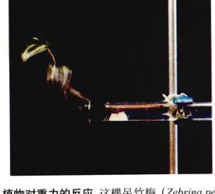
图 41.4 植物对重力的反应 这棵吊竹梅 (Zebrina pendula) 被水平放置，生长了7天。注意茎的负向地性。
向重力性反应分4个步骤：①细胞感应重力；②在感应到重力的细胞中产生信号；③信号在细胞内和细胞间传递；④根或茎的“上”、“下”面的细胞微细的伸长。
感应重力的第一步尚有争议。造粉体 (amyloplast)——即含有淀粉的质体在重力场中下沉，被认为参与重力的感应。造粉体可能与细胞骨架相互作用，但最终的效应是在茎轴近地面一侧的生长素浓度高于相反的一侧，从而使茎靠地面一侧的生长速度较相反一侧快。结果，茎背重力方向向上弯曲，即负向重力性反应 (negative gravitropic response)。这种激素浓度差在根中还没有得到证实。相反，横放的根上部比下部生长得更快，使得根最终向下弯曲生长。这种现象称为正向重力性 (positive gravitropism)。茎中感应重力的细胞在内皮层，无内皮层的拟南芥的突变体 scarecrow 和 short root 就没有正常的向重力性反应。
根中感应重力的细胞在根冠，而进行不对称生长的细胞则位于紧靠根冠的伸长区的近端。信号如何通过这段距离传导仍是一个令人困惑的问题。可能与生长素有关，但是当生长素的传输被抑制之后，伸长区仍有向地性反应。有人提出膜极化而引起某种电信号的假说，并在空间站做了试验。到目前为止，这种假说还没有提出确切的作用机制。
令人惊奇的是，热带雨林中有些植物的根沿着周围植物的茎向上生长，而不是像其他植物的根那样表现出典型的正向地性。当雨水通过雨林茂盛的树冠，并沿树干慢慢流下时会慢慢地溶解养分。与支撑大树却营养贫乏的土壤相比，这种水提供了更可靠的营养来源。按照目前流行的假说来解释上述现象是有疑问的。有人提出根对生长素更敏感，生长素实际可能抑制了较低一侧的根的生长，因而出现正向地性。生长于热带雨林……
Page 4 / 原始页码 784
长而进入裂缝。有人称这种生长运动为向水性 (hydrotropism)，但是，究竟是水还是某些其他刺激因子引发了这种向性运动，目前尚无定论。
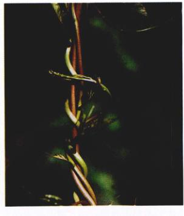
图 41.5 向触性 向触性使得这些缠绕茎沿着它们接触的物体缠绕。
林中的植物，其根对生长素的敏感性可能减弱了。
3) 向触性
向触性 (thigmotropism) 这个词源于希腊词 thigma (接触的意思)，向触性是植物或者植物某个部位对物体、动物、植物甚至风的接触做出的反应（图 41.5）。当植物的卷须接触到另一物体时，那些作用还不清楚的特化的内皮层细胞就能感受到接触，并促使不平衡的生长，致使卷须缠绕在物体上。这个过程有时候只需 3~10 min。生长素和乙烯好像都参与卷须的运动，它们能在没有接触时诱发缠绕。另外像铁线莲、旋花类植物和菟丝子那样的植物，叶柄或是没有特化的茎都能缠绕在其他茎或者固体上。
拟南芥再一次证实了其作为模式植物系统的价值。已经鉴定了一个基因，其表达水平在植物受触 10~30 min 后提高了 100 多倍。在分析环境信号转变为生长反应的途径时，分子遗传学技术极具价值。这个基因提供了阐明植物如何对接触做出反应的大有希望的第一步。
4) 其他向性运动
刚刚讨论的向性运动都是了解得比较深入的，但是还有其他的向性运动存在。它们包括：向电性 (electrotropism) (对电反应)、向化性 (chemotropism) (对化学物质反应)、向伤性 (traumotropism) (对伤疤反应，在 808 页将讨论)、向温度性 (thermotropism) (对温度反应)、向氧性 (aerotropism) (对氧气反应)、向黑性 (skototropism) (对黑暗反应) 和向磁性 (geomagnetotropism) (对磁场反应)。根经常会沿着破裂的水管中水的扩散梯度生长而进入裂缝。
41.1.2 休眠
有时候改变生长方向还不足以保护植物免受恶劣环境的影响。此时，停止生长进入休眠的能力则提供了休眠一个生存优势。一个极端的例子就是种子的休眠 (dormancy)，当然也有其他一些躲过不良时期的中间途径。在植物的生活史中，环境信号既启动休眠期，也终结休眠期。温度、水和光就属于这种环境信号。
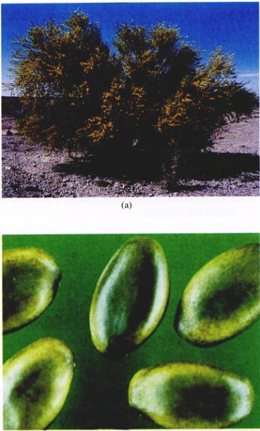
图 41.6 休眠是对周期性干旱季节的普遍适应 (a) 沙漠植物 Cerci-dium floridum 有坚硬的种子，(b) 种子只有在破裂时才会萌发。
Page 5 / 原始页码 785
在温带，我们通常将休眠与冬季联系在一起，因为严寒的天气与随之而来的水的无法利用使得植物不能生长。在这个季节，落叶植物和灌木的芽保持休眠状态，顶端分生组织也被包在鳞片内，得到了很好的保护。多年生草本植物以肥大的地下茎或根的形式储存营养过冬。许多其他植物，包括大多数一年生植物，则以种子的形式过冬。
在一些季节性干旱的气候区域，种子休眠主要发生在干旱的季节，通常是夏天。当生存条件较合适时，雨水会诱发种子萌发。一年生植物通常分布在季节性干旱地带。当生长所需的水分不充足时，种子是植物度过干旱季节的理想方式。一旦下雨，它们就萌发，并快速生长，以适应相对较短的雨季。第40章已经讨论了有关打破种子休眠，诱发种子在合适环境萌发的几种机制，包括滤去种皮上抑制萌发的化学物质，或者机械地冲破种皮——一种在季节性干旱地带非常有利用于植物生长的方式。每当下雨时，雨水总能洗去种皮表面的化学物质。而其他的种子被雨水冲刷，当流经暂时没淹没的干枯河床时，其坚硬的种皮也被破裂了（图 41.6）。
种子的休眠期可能会很长。许多豆科植物具有不透水和氧气的坚硬的种子。这些种子如果不经特殊的处理，可能会原封不动几十年或者更长时间。它们最终只有在种皮破裂和水分足够时才能萌发。几千年前的种子现在也已成功地萌发。
适宜的温度、日照长度和水量能使芽、地下茎、根以及种子从休眠状态苏醒过来。苏醒的条件物种各异。例如，有些杂草种子在一年中较凉爽的时候萌发，较暖和的季节反而抑制萌发。赤道附近和多数温带地区的日照长短的差异对休眠有戏剧性的影响。比如，在温带地区，当日照变短时，树木休眠是很常见的，但这对生长在赤道附近的植物来说就很不平常了。
41.2 影响植物生长的激素与环境密切相关
41.2.1 植物激素
虽然植物对环境信号的最初反应可能主要依靠电信号，但改变形态的长期反应则是依靠复杂的生理系统网络。许多内部信号的传递过程涉及及本章将着重讨论的植物激素。激素不仅参与植物对环境的反应，也从内部调控植物的发育（参见第40章）。
激素 (Hormone) 是一类小分子化学物质，它们往往由某器官的一定部位产生，然后被运送到其他部位，产生生理或者发育上的反应。激素的活性主要是缘于它们能激活特定生理反应同时抑制另外一些反应（图 41.7）。激素和接收信息的组织共同决定了植物如何在特定时刻作出反应。
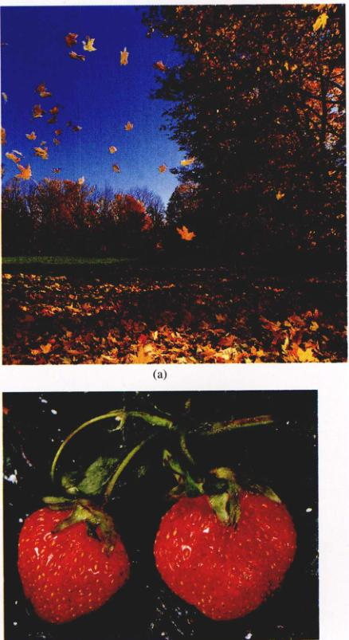
图 41.7 植物激素发挥重要作用 植物激素通常是共同作用，影响植物生长和发育的许多方面，包括 (a) 叶子脱落和 (b) 成熟果实的形成。
动物激素通常产生于特定的部位，往往是器官。而植物激素则由非专门的组织分泌。植物激素的组织特异性低同时具有其他更多的功能。植物激素通常分为7大类：生长素、细胞分裂素、赤霉素、油菜素类固醇、寡糖素、乙烯以及脱落酸（表 41.1）。目前的研究主要集中在激素的生物合成和激发信号转导通路的激素受体的特性。有关植物激素功能的分子基础现在仍然是个谜。
由于植物的功能和发育的许多方面都涉及到激素，我们选择于植物生理学相关的植物激素共同作用的例子。本节主要是让大家对这些激素有一个整体认识，以便为后续几章讨论的具体激素类型做铺垫。
Page 6 / 原始页码 786
表 41.1 主要植物激素的功能
| 激 素 |
结构 |
主要功能 |
植物中分泌处或者发现处 |
| 生长素 (IAA) |
Structure IAA |
促进茎的伸长和生长；促进不定根的生成；抑制叶子脱落；促进细胞分裂（与细胞分裂素共同作用）；诱导乙烯的分泌；促进侧芽的休眠。 |
顶端分生组织、其他未成熟部位。 |
| 细胞分裂素 |
Structure Cytokinin |
有生长素存在时，促进细胞分裂；促进叶绿体的发育；延缓叶子衰老；促进芽的形成 |
根的顶端分生组织、未成熟的果实。 |
| 赤霉素 |
Structure Gibberellin |
促进茎的伸长；种子萌发时刺激酶的生成。 |
根端和茎端、幼叶、种子中。 |
| 油菜素类固醇 |
Structure Brassinosteroid |
与生长素和赤霉素的作用重叠。 |
花粉、未成熟的种子、芽、叶子。 |
| 寡糖素 |
Structure Oligosaccharin |
防止病原体侵入；可能与生殖发育有关。 |
细胞壁。 |
| 乙烯 |
Structure Ethylene |
控制叶、花、果实的脱落；促进果实成熟。 |
根茎的顶端分生组织、叶子基部、衰老的、成熟的果实。 |
| 脱落酸 |
Structure Abscisic Acid |
抑制芽的生长；控制气孔的开关；部分控制种子的休眠；抑制其他激素的作用。 |
叶、果实、根冠、种子。 |
Page 7 / 原始页码 787
41.2.2 生长素
一个多世纪之前，一种称之为生长素 (auxin) 的有机物成为第一种被发现的激素。生长素增加了细胞壁的可塑性，也有利于茎的伸长。细胞壁可以因膨压的变化而增大，为此细胞壁必须具有相当大的可塑性。生长素可以软化细胞壁。生长素及其功能的发现是一个有思想性的实验设计的典范，这也正是我们在此讨论的原因。最近的研究已经发现了生长素的受体，其运输机制也正在被揭示。与所有的激素种类一样，我们才刚从细胞和分子水平来研究激素是如何调节节生长和发育的。
1) 生长素的发现
伟大的进化论学者查尔斯·达尔文在晚年主要致力于植物的研究。1881年，他和他的儿子弗兰克里斯 (Francis) 出版了一本题为《植物运动的动力》 (The power of Movement of Plants) 的书。在这本书中，达尔文报告了其针对生长着的植物对光反应所做的系统性实验。这种反应就是后来熟知的向光性 (phototropism)。他们在实验中利用正在萌发的燕麦 (Avena sativa) 和一种虉草 (Phalaris canariensis) 的幼苗进行了许多观察。
达尔文父子发现：如果光线主要来自一个方向时，幼苗将强烈地向该方向弯曲生长。如果用透明的玻璃套罩住茎尖，幼苗照样弯曲。但是，当用不透光的金属帽罩在茎尖上时，幼苗不再弯曲（图 41.8）。他们还发现，当用不透明的环套在茎尖以下的部位使其感受不到光时，并不能阻止环以上的部位向光弯曲。
为了解释这些未曾预料的发现，达尔文父子提出如下假说：当幼苗受单侧光照射时，其茎尖产生了一种“影响物” (influence) 并向下传递，茎则向光弯曲。在其后大约30年的时间里，达尔文父子这此易于理解的实验一直有关这些有趣现象的惟一信息来源。
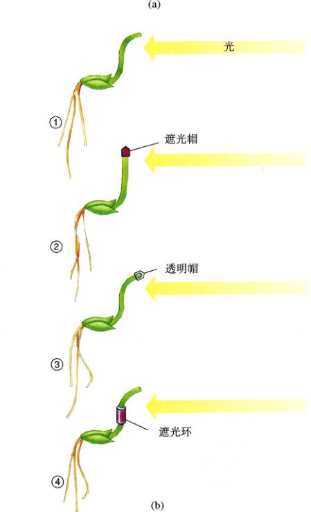
图 41.8 达尔文父子的实验 (a) 幼苗朝光正常弯曲生长。(b) ①正常弯曲；②幼苗顶端用遮光帽盖住时，不弯曲。③幼苗顶端用透明帽盖住时，弯曲；④当遮光环套在茎尖以下部位时，上部仍然弯曲。达尔文父子得出结论：植物感应光照后，一种导致弯曲的“影响物”由幼苗的顶端传递到了下面，并发生了正常的弯曲。
Page 8 / 原始页码 788
后来丹麦植物生理学家 Peter Boysen-Jensen 和匈牙利植物生理学家 Arpad Paal 各自独立证实了导致枝条弯曲的是一种化学物质。他们提出，若切断一萌发着的幼苗的顶端，中间夹以小块琼脂使得幼苗顶端不与下部部位接触，幼苗的生长状况没有发生任何变化。显然有物质从幼苗的顶端向下穿透琼脂运输到发生弯曲的部位。在单一光照或者黑暗环境中观察到的实验现象的基础上，Paal 提出有一种未知的物质不断地从幼苗的顶端向下运输，促进了各处的生长。这种光照模式显然不能促使枝条弯曲生长。
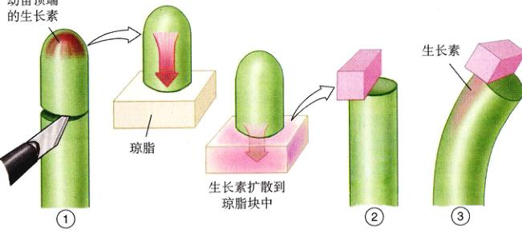
图 41.9 Frits Went 的实验 ①Went切下燕麦幼苗的顶端，将它放在惰性的凝胶状的琼脂上。②将琼脂块放在另外一株去顶的幼苗的一侧。③幼苗由放有琼脂块的那一侧向另一侧弯曲。Went得出结论，是他称之为生长素的物质促进了细胞的伸长，且这种伸长是与燕麦幼苗背光的一侧积累。
1926年，荷兰植物生理学家 Frits Went 将 Paal 的实验向前推进了重要的一步。他切下光照处理过的燕麦幼苗的顶端，放在琼脂上。然后他又取出一块一直在黑暗中生长的另一株燕麦幼苗，用同样的方法切下它的顶端。最后他从刚才放了光照幼苗顶端的琼脂上切下一小块，将它放在黑暗中培育的去顶的幼苗的一侧（图 41.9）。虽然这些幼苗本身没有受过光照，它们仍然从放琼脂的一侧弯向了没有放琼脂的一面。
作为对照，Went 将一块纯的琼脂放在去顶的茎上，结果既没有旺盛效应，也未见向放有琼脂的那边有任何的弯曲。最后，他从光照幼苗的下部各处分别切下一段放在黑暗中培育的去顶燕麦幼苗的茎尖，仍然没有发现任何效果。
实验结果使 Went 得出结论，即来自光照燕麦幼苗顶端的溶解在琼脂中的物质促使原本笔直生长的幼苗弯曲。他还指出，这种化学学信使得幼苗背中它流经的那一侧的细胞生长得比另一侧快（图 41.10）。换句话说，这种物质促进而非抑制细胞伸长。他将这种物质命名为“生长素”，来自希腊字“auxien”，意为增加。
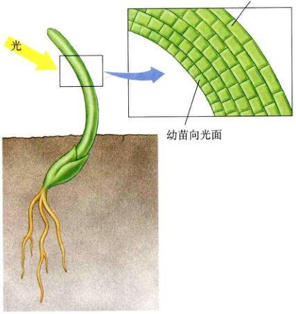
图 41.10 生长素促使背光面的细胞伸长 Went 认为一种称为生长素的物质促进细胞伸长。背光面的植物细胞含有更多的生长素，因此比向光面的细胞生长得更快，最终促使植物向光弯曲。进一步的实验显示了为什么背光面会有更多的生长素。
Went 的实验为解释达尔文父子45年前发现的反应奠定了基础。燕麦幼苗向光照方向弯曲是由茎两侧生长的浓度差造成的。背光面的生长素浓度较高，则背光面的细胞就比向光面的细胞伸长得快，导致幼苗向光弯曲。
2) 生长素的作用
生长素使得植物能以最适方式适应它所处的环境。
Page 9 / 原始页码 789
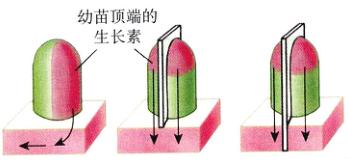
图 41.11 向光性和生长素：Winslow Briggs 实验 将一株燕麦幼苗的顶端放在一块琼脂上，用单侧光照射，然后将这些琼脂块放置在去顶的幼苗顶上，测量由此造成的弯曲度。而 Briggs 在不同部位插入隔离片并观测由此造成的弯曲的影响。将实验 (a) 和 (b) 与暗处进行的相似实验进行比较，结果表明，生长素的产生与光照无关，琼脂块都使幼苗大致弯曲 24°。如果隔离片像 (d) 那样插入，光使得生长素向背光处移动。最终，(c) 表明，真正发生的是生长素的转移，而不是被光面和向光面的生长素产生速度，因为当生长素的转移被隔离片阻断时，隔离片两边的琼脂造成的弯曲度都是 24° 左右。
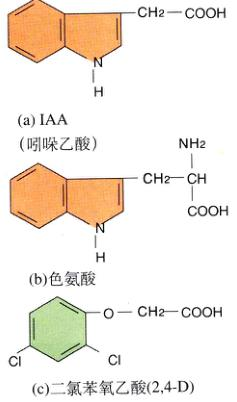
图 41.12 生长素类 (a) 吲哚乙酸 (IAA)，主要的天然生长素；(b) 色氨酸，植物可能利用其合成 IAA；(c) 二氯苯氧乙酸 (2,4-D) 是一种广泛用作除草剂的人工合成的生长素。
它促进生长和伸长，使得植物更易于对环境做出反应。环境信号直接影响生长素在植物体内的分布。环境因素尤其是光，是如何发挥这种效应的呢？理论上说，光可能破坏生长素，或者降低细胞对生长素的敏感性，或者促使生长素分子从幼苗向光的一面转移到背光的一面。现在已经证实，情况正如上述最后一种理论所说。
在一个简单而有效的实验中，Winslow Briggs 在枝条中垂直插入一片透明的薄云母片，使其一半朝光，另一半背光（图 41.11）。他发现，当有这样一个隔离片之后，光就不能使枝条弯曲了。当 Briggs 检测此光照植物时，他发现云母片向光面和暗面的生长素浓度是相同的。他由此断定植物对光正常的反应应包括生长素从向光处转移到背光处，而云母片阻碍了生长素的运输。
生长素的作用是多样且多变的。生长素能增强维管形成层和维管组织的活性。它大量出现在花粉中，对果实的发育起重要作用。为此，大量的生长素被人工合成，用于商业目的。通常情况下，如果没有受精，果实是不能发育的，种子也不会产生。但是如果使用了生长素就可以做到。有些作物，即使在受精之前，授粉就能促进生长素的释放，从而促使果实的发育。
3) 生长素如何工作
尽管生长素的研究历史已经很长，但它作用的分子基础仍旧是个谜。吲哚乙酸 (IAA) 的化学结构与氨基酸中的色氨酸结构相似，很可能植物就是利用它合成了 IAA（图 41.12）。与动物激素不同，植物没有特定的信号传送给特定的靶细胞，从而引发可预测的反应。很可能各个生长素的感应位点存在。在向植物基部传输的激素类型中，生长素也是很独特的。已经鉴定了拟南芥中与生长素运输有关的两个家族的基因。例如，一种蛋白质与生长素从顶端起始的基运有关；而另两种蛋白质在根尖发挥作用，调节植物对重力的生长反应。要把生长素可测量、可观察的效应与生长素运输到某一特定点并与受体结合后发生的一系列事件联系起来，我们还有很长的一段路要走。
生长素的一个作用就是增加植物细胞壁的可塑性，此时必须是还未形成大量次生壁的幼嫩细胞。在一个细胞活跃生长期间，其原生质体亦随着膨大，可塑性越好的细胞壁越能伸展得更好。酸生长假说 (acid growth hypothesis) 提供了一个将生长素和细胞壁膨胀联系起来的模型（图 41.13）。生长素使得能主动运输 H+ 从细胞质运输到细胞壁的空间，这便使细胞壁的 pH 降低，从而激活了那些能够破坏细胞壁纤维素分子间键的酶。注意，不同的酶有不同的最适 pH 值。这一假说已经被多种不同的实验方法所证实。那些能够阻止细胞壁酸化的缓冲溶液同时能阻止细胞的膨胀。而其他那些能够将氢离子从细胞中释放出来的成分也能引起细胞的膨胀。当用生长素处理后，可以观察到相应的氢离子的运动。这种机制导致植物对环境信号有一个快速反应。
Page 10 / 原始页码 790
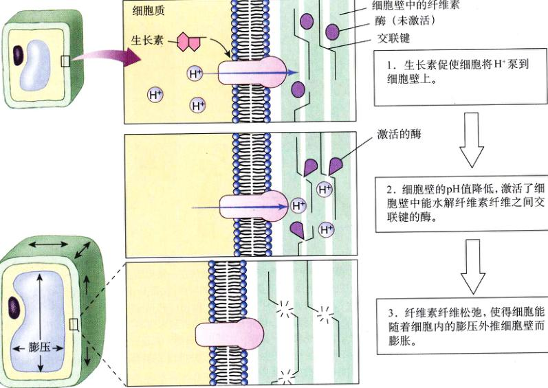
图 41.13 酸生长假说 生长素刺激 H+ 从细胞内释放，从而改变其细胞壁的 pH 值。这激活了那些能够断裂细胞壁内化学键的酶的活性，细胞壁因此而膨胀。
4) 人工合成的生长素
人工合成的生长素，如萘乙酸 (NAA) 和吲哚丁酸 (IBA) 等，在农业和园艺生产中有许多用途。它们最重要的用途之一就是防止脱落，即导致叶子或者其他器官凋落的过程。人工合成的生长素可以用于防止苹果在成熟前脱落，以便枝条载着果实一同运输。它们还被用于促进菠萝的开花结果，诱导植物扦插时根的生成。
人工合成的生长素还被用来控制杂草。当用作除草剂时，它们的浓度高于平时在植物体内正常出现的生长素浓度。其中有一种最重要的人工合成的生长素类除草剂叫二氯苯氧基乙酸，简称 2,4-D（图 41.12c）。它能选择性地清除一些阔叶双子叶植物，因而用于除去草坪中的杂草。双子叶植物杂草的茎停止了所有轴向生长。
除草剂 2, 4, 5-三氯苯氧基乙酸（即 2, 4, 5-T）与 2, 4-D 很相似。2, 4, 5-T 被广泛用做广谱杀虫剂，清除杂草和木本植物的幼苗。在越战中，它曾被作为一种丛林脱叶剂，即著名的 Agent Orange 的一种成分，因而声名狼藉。1979年已被禁止在美国大量使用。生产 2, 4, 5-D 时，它不可避免地被少量的二氧 (杂) 芑 (dioxin) 污染。二氧 (杂) 芑只要十亿分之几的剂量就能导致肝和肺疾病、白血病、流产、生育缺陷，甚至导致实验动物的死亡。
Page 11 / 原始页码 791
41.2.3 细胞分裂素
细胞分裂素 (cytokinin) 构成另一类植物体内天然存在的生长激素。1913年前后，奥地利的 Gottlieb Haberlandt 研究证实，维管植物的多种组织（如马铃薯块茎）中存在着一种未知的化学物质，它能使薄壁组织细胞恢复分生能力，进而诱导分化形成木栓形成层。椰子乳能够促进生长在培养基中的植物组织块的器官分化。后来发现，原来是椰子乳中的细胞分裂素促进了器官的分化。随后的研究集中于细胞分裂素在愈伤组织分化中的作用。
细胞分裂素是一种能与生长素共同作用，促进植物体细胞分裂和分化的植物激素。大多数细胞分裂素由根顶端分生组织产生，并被运输到植物体的各个部位。发育着的果实也是细胞分裂素的重要合成部位。在苔藓植物中，细胞分裂素促进配子体上营养芽的形成。在所有的植物中，细胞分裂素似乎都是与其他激素共同调控生长模式的。
细胞分裂素是一种嘌呤，可能是腺嘌呤的衍生物，或者与腺嘌呤有相似的分子侧链（图 41.14）。其他一些化学结构各异的分子，虽然不知道是否天然存在，但是和细胞分裂素有相似的作用。细胞分裂素促进侧芽生长形成侧枝（图 41.15）。
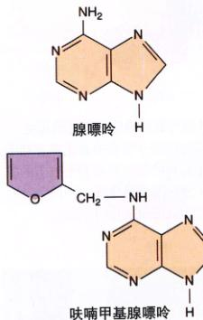
图 41.14 一些细胞分裂素 两种普遍使用的合成细胞分裂素：呋喃甲基腺嘌呤和 6-苄胺嘌呤。注意它们与腺嘌呤碱基的相似之处。
与生长素相反，细胞分裂素抑制侧根的形成。由于这种相互关系，细胞分裂素和生长素之间的平衡连同其他许多因素就决定了根和枝的形成。另外，细胞分裂素还于从植物上脱落的叶片，可以延缓其黄变。它们起到了抗衰老激素的作用。
像其他激素一样，人们研究了细胞分裂素对特定培养基中组织块的生长和分化的作用。通过调节生长素和细胞分裂素之间的相对用量，植物组织能形成枝条、根或者一个未分化的组织块（图 41.16）。在早期细胞生长的实验中，椰子乳是一种必需的材料。最后发现，椰子乳不仅含有丰富的生长所需的氨基酸和其他一些含氮化合物，而且也含有细胞分裂素。细胞分裂素似乎是有丝分裂和细胞分裂所必需的。它们明显地促进有丝分裂所需的特定蛋白质的合成或者活化。
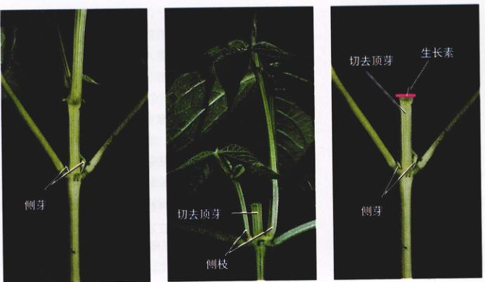
图 41.15 细胞分裂素促进侧芽生长 (a) 当植物的顶端分生组织完好无损时，来自顶芽的生长素将抑制侧芽的生长。(b) 切去顶芽，细胞分裂素促使侧芽生长成侧枝。(c) 当切去顶芽并将生长素涂在切面上时，侧芽的生长同样受到抑制。
Page 12 / 原始页码 792
细胞分裂素也被病原体用来针对植物。例如，根瘤土壤杆菌 (Agrobacterium tumefaciens) 能把自身的基因整合到植物体的基因组中，从而加速促使细胞大量分裂，最终导致冠瘿瘤 (crown gall tumor) 的形成（图 41.17）。这些激素生物合成基因如何在其细菌中终止？这是一个难解的进化问题，协同进化并不能总是有利于植物的生长。
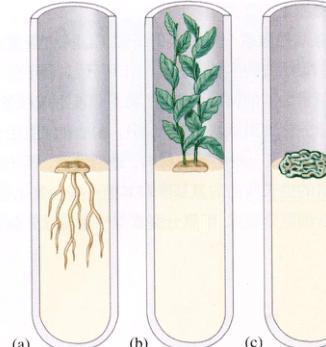
图 41.16 细胞分裂素和生长素相对量影响培养器官的再生 在这个烟草实验中：(a) 生长素与细胞分裂素的高比率有利于根的发育；(b) 细胞分裂素与生长素的高比率有利于枝条的发育；(c) 两者浓度相当时导致未分化细胞的生成。不同物种的发育受细胞分裂素和生长素浓度比率的影响是不同的。
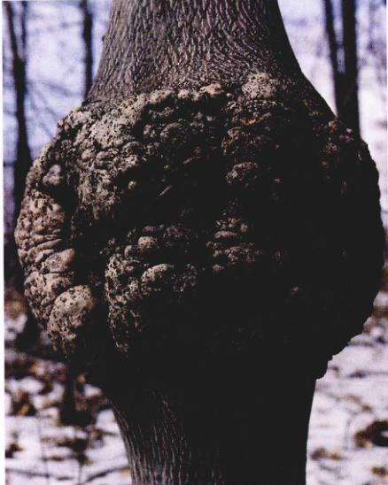
图 41.17 冠瘿瘤 有时候细胞分裂素能被病原体利用。在这个例子中，根癌土壤杆菌 (Agrobacterium tumefaciens)（一种细菌）已经将它的一段 DNA 整合到植物体的基因组中。此 DNA 包含能转录翻译细胞分裂素和生长素合成所必需的酶的基因。植物体中激素含量的提高引起大量的细胞分裂，导致瘤的形成。
41.2.4 赤霉素
赤霉素 (gibberellin) 的名称是由赤霉菌 (Gibberella fujikuroi) 而来的。这种真菌能使寄生的水稻疯长，是日本植物病理学家黑泽英一 (Eiichi Kurosawa) 在 19 世纪 20 年代研究水稻恶苗病 (bakane disease) 时发现的。通过培养赤酶菌 (Gibberella)，他得到一种能使水稻产生恶苗病的物质。这种物质后来被分离出来，并由日本化学工作者在 1939 年测定出结构。英国化学家 1954 年再次确认了该结构。虽然这些化学物质开始只被认为有点相似，但后来证明这些物质都属于赤霉素大家族，现已知有 100 多种，是一类天然存在的植物激素。它们都是酸性的，一般缩写为 GA (赤霉酸)，并用不同的下标来区分，比如 GA1、GA2 等。赤霉素不仅可以作为激素在植物内部发挥作用，而且可以在藏类植物中做信息素。在蕨类植物中，从一个配子体释放出来的类赤霉素化合物能够诱发邻近配子体雄性生殖结构的发育。
根和茎的顶端部位合成的赤霉素对茎的伸长起重要作用。如果同时存在生长素，伸长的效果更加明显。在许多植物中，赤霉素能使某些矮小突变株恢复正常的生长发育能力（图 41.18）。一些矮小突变株由于不能产生足够的赤霉素，故能对赤霉素产生有反应。其他的变种对赤霉素则无感应能力。通过分析合成赤霉素有缺陷的玉米突变株得知，一个复杂的生物合成的所有过程都需要大量的赤霉素。虽然很多赤霉素都是 GA1 的中间产物，但最新的研究表明，不同的中间产物还可能具有特定的生物学作用。
在第40章中，我们已了解到，赤霉素能刺激产生 α-淀粉酶及在种子萌发和谷类幼苗形成的过程中利用营养源所需的其他水解酶。编码这些酶的基因转录是如何被调控的呢？GA 是一个来自胚的信号，它启动糊粉层编码水解酶的基因的转录。
Page 13 / 原始页码 793
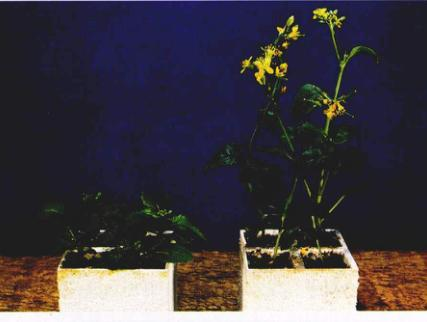
图 41.18 赤霉素的作用 这种十字花科植物芜菁 (Brassica rapa) (芥属)，生活史很短，若增加赤霉素水平，可快速开花。左图所示的玫瑰形的变异株是由于不能产生赤霉素。通过使用赤霉素可使它们恢复正常。已经分离鉴定其他一些感知赤霉素有缺陷的变异株，它们对使用赤霉素不会有反应。
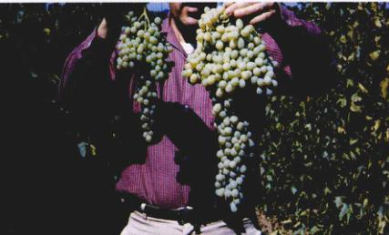
图 41.19 应用赤霉素增大了葡萄之间的间距 右边的葡萄由于单个葡萄有更多的生长空间而长得特别大。
GA 在一定程度上使 DNA 更加容易与蛋白质结合，同时又反过来有利于基因的转录。种子萌发的早期阶段，DNA 的合成似乎不会发生，但当胚根冲破种皮时，DNA 的合成就显得非常重要了。
赤霉素也影响植物生长发育的其他很多方面。有时，GAs 可以代替低温或者光照条件，明显加速种子的萌发。商业生产中，利用赤霉素延长枝条节间的长度使葡萄花间隔开来，葡萄便有了更大的生长空间（图 41.19）。
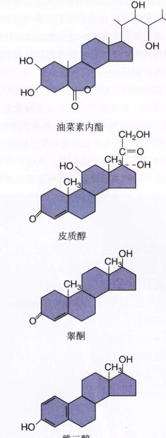
图 41.20 油菜素类固醇（如油菜素内酯）结构上与动物类固醇激素很相似 皮质醇、睾酮和雌二醇都是动物类固醇激素。
41.2.5 油菜素类固醇和寡糖素
1) 油菜素类固醇
虽然我们知道油菜素类固醇 (brassinosteroid) 已经有30年之久，但是，将它定义为一类植物激素还是最近的事。它们最先是在油菜 (Brassica) 的花粉中发现的，并因此而得名。历史上一直没有把油菜素类固醇作为激素来研究，部分原因可能是它的作用效果与其他激素重叠，尤其是生长素和赤霉素。这三类激素的作用已见有报道。应用分子遗传学的方法使人们熟悉了油菜素类固醇是如何生成的，以及如何在信号传导通路中发挥作用，并取得了重大进展。油菜素类固醇可以引起人们极大的兴趣是因为它与动物的类固醇激素非常相似（图 41.20）。编码油菜素类固醇生物合成途径中所需的酶的基因中有一个与编码睾酮和相关类固醇合成途径所需的基因非同常相似。油菜素类固醇在海藻中也已经发现，在植物中好像也是普遍存在的。关于它们的进化起点早于动植物分离的论点也是有道理的。
油菜素类固醇具有广泛的生理作用，包括细胞伸长、细胞分裂、茎的弯曲、维管组织的发育、延缓衰老、膜活化和生殖发育。环境信号能激活油菜素类固醇的作用。对油菜素类固醇的反应发生变化的突变体已被鉴定出来，但是信号转导途径仍有待进一步研究。从进化的角度来看，将这些途径与动物类固醇信号转导途径经做比较将会非常有意义。
Page 14 / 原始页码 794
2) 寡糖素
植物细胞壁的组成成分中除了纤维素之外，还有大量的称为寡糖 (oligosaccharide) 的复杂碳水化合物。有证据表明，这些细胞壁成分不仅仅起结构上的作用，而且能作为信号分子（见第39章）。那些被认为有类似激素功能的寡糖就是寡糖素 (oligosaccharin)。寡糖素可以在病原体分泌的酶的作用下从细胞壁中释放出来。这些糖可以传递防御反应信号，例如本章后面将要讨论的超敏反应。另有一种寡糖素能抑制豌豆茎因生长素作用引起的伸长。这些分子的浓度在比正常的植物体内激素水平低 1~2 个数量级时也是有活性的。我们已经知道生长素和细胞分裂素的浓度比是如何影响组织培养中的器官形成的。寡糖素也影响再生组织组的表型，抑制根的形成并促进再生花的产生。如何将人工培育所获得的结果还原到植物体内，这是个值得关注的问题。寡糖素的生物化学结构使它们成为极具挑战性的研究对象。目前的研究集中在寡糖素是如何与细胞接触并启动信号转导途径的。
41.2.6 乙烯
在被作为植物激素研究之前很久，人们就知道，这种简单的气态碳氢化合物乙烯 (CH2=CH2)。当它从街道煤气灯中漏出时，会使植物落叶。而乙烯实际上是由植物产生的。
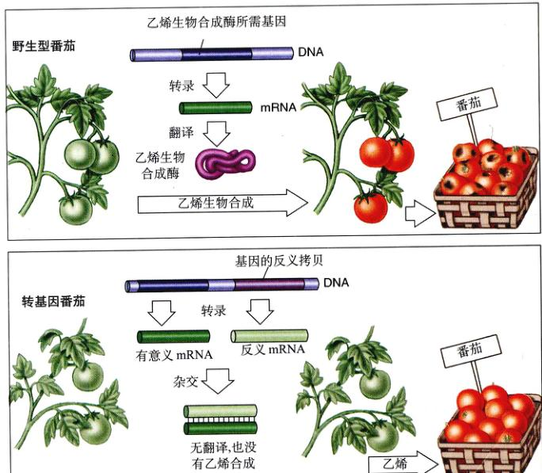
图 41.21 果实成熟的基因调节 乙烯生物合成所需基因的反义拷贝抑制了乙烯的形成以及随后转基因果实的成熟。这条反义链与乙烯合成所需基因的序列是互补的。转录后，反义 mRNA 与有意义 mRNA 配对，而形成的双链 RNA 就不能被翻译成功能蛋白质。乙烯无法生成时，果实不能成熟。这较硬的果实在未熟的情况下运输，之后又可以用乙烯催熟。这样，当野生的番茄别达到或者也许已经腐烂时，转基因番茄仍能更长时间地保鲜。
Page 15 / 原始页码 795
一种植物代谢的正常产物，数量很少，可与其他植物激素相互作用。当生长素从茎的顶端分泌组织向下运输时，它引发侧芽周围的组织产生乙烯，从而延缓生长。乙烯还可以能以同样的方式抑制茎和根的伸长。一个乙烯受体已经被确认。它显然出现在光生化进化的早期，与细菌中分离得到的感知环境的蛋白质有相同的特点。
乙烯对果实的发育起主要作用。早已授粉的花朵和发育着的果实产生可见的生长素，促进乙烯的产生，而这些又反过来加快果实成熟。同时，复杂的碳水化合物被分解成简单的单糖；细胞壁被分解；细胞壁变软；与成熟果实的香味有关的挥发性物质也产生出来。
促使乙烯成为公认的植物激素的最早观察之一，是用来自橘子的气体处理香蕉而使其早熟的实验。这种关系暗示了乙烯的重要经济价值。例如，番茄经常在未成熟时就采集回来，然后用乙烯人工催熟。乙烯也经常被用于加快柠檬和柑橘的成熟。二氧化碳则具有相反的作用，各种果实往往放在充满二氧化碳的环境中运输。目前，还利用生物技术发明了另一种解决方法（图 41.21）。人们克隆了乙烯生物合成所需的酶的一种基因，并将该基因的反义拷贝插入到番茄的基因组中。该基因的反义拷贝就是一段与基因的有意义拷贝互补的一段核苷酸序列。在这株转基因植物中，乙烯生物合成基因的有效链和反义 mRNA 序列也各自互补。这就阻止了仅要求单链 mRNA 的翻译过程，乙烯则不能合成，转基因番茄就不能成熟。坚硬的青番茄就可以在未变熟、无腐烂的情况下运输。然后，将这些番茄暴露在乙烯中，则又会使其成熟。
研究表明，乙烯具有很重要的生态学作用。当植物暴露在臭氧和其他有毒的化学物质、极端的温度、干旱、病原体、草食动物的袭击以及其他的环境压力中，乙烯的含量就会增加。增加的乙烯会加快受上述环境压力破坏的叶子或者果实的脱落。植物暴露在臭氧中会受到损害，这也是由植物产生的乙烯引起的。当植物受到草食动物袭击或者疾病感染时，乙烯的产生可能启动植物自身防御机制的信号，这可能也包括产生对害虫有毒的分子。
41.2.7 脱落酸
脱落酸 (abscisic acid) 可能主要在成熟的绿叶、果实和根冠中合成。虽然这种激素因它能促使棉球脱落而得名，但并没有证据证明它在上述过程中起作用，而事实上是乙烯在加速衰老和脱落。
脱落酸很可能会诱发冬芽（在整个冬季都保持休眠的芽）的形成，叶原基则随之转变成形成芽鳞（图 41.22a）。和乙烯一样，它可能也抑制休眠芽的生长。看起来，脱落酸可以通过抑制芽的生长和伸长，而与赤霉素的作用效果相抵消（赤霉素促进芽的生长和伸长）；它还可以抵消生长素的作用而加速衰老（生长素延缓衰老）。脱落酸在种子休眠时起作用，萌发时又与赤霉素的作用相反。对控制气孔的开关也很重要（图 41.22b）。
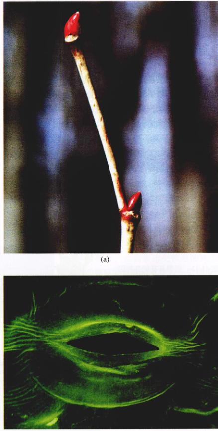
图 41.22 脱落酸的作用 (a) 脱落酸在一种美洲红木的冬芽形成过程中发挥作用。这些芽在冬季都保持休眠，芽鳞，变态的叶，将保护其免遭干旱。(b) 脱落酸也可以通过影响钾离子出入保卫细胞而影响气孔的关闭。
Page 16 / 原始页码 796
脱落酸存在于所有的植物中，显然从早期植物进化以来就一直作为生长调控物质起作用。相对而言，我们对脱落酸的生理、生化作用的实质却知之甚少。这种作用很迅速，往往在一两分钟内完成，因此它们至少部分与基因表达无关。脱落酸的一些长期效应则涉及基因表达。由于脱落酸生物合成途径中几种酶的基因都在模式植物拟南芥中排序，将很容易确定哪些基因是因为响应脱落酸而转录的。当将植物受到环境胁迫，尤其是干燥时，脱落酸的浓度会增加。像其他激素一样，当脱落酸的作用方式被进一步认识时，其很有具有商业应用价值。在研究耐干旱性时，它应该是一个有竞争力的候选者。
41.3 环境影响开花
41.3.1 植物经历变形期
1) 诱导开花的概述
严格受控的过程决定了花在何时、何处形成。植物必须有感受能力 (competence)，对内外部调节开花的信号做出反应。一旦植物具有生殖能力，包括光、温度以及内部促进和抑制信号等在内的综合因素将决定花何时产生（图 41.23）。这些信号将启动决定花器官形成位点的基因，这些花的器官包括尊片、花瓣、雄蕊和心皮。一旦细胞接到指令要变成特定的花器官时，另外一系列的发育过程将形成花各个部位的三维结构。
2) 变形期
像许多动物一样，植物经过发育变化最终形成有生殖能力的成熟个体。这种从幼体到成体的发育变化在蝌蚪到成蛙、毛虫到有生殖能力的蝴蝶的变态中可以看到。植物经过一个类似的变态最终形成花。与青蛙最后脱掉尾巴不同，植物只是在原先已经存在的结构基础上，利用它们的分生组织增加新的结构。在萌发时，即使所有的环境条件都是最佳的，大多数植物仍无法产生花。内部发育变化使植物获得了能对内外部诱导开花的信号做出反应的感受能力 (competence)，这种变化被认为是变形期 (phase change)。变形期在形态上可能很明显，也可能很微妙。
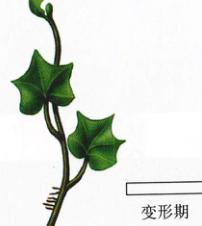
图 41.23 诱导开花的各种因素 这是一个导致茎分生组织产生花的模型，包括环境诱导和内部变化过程。
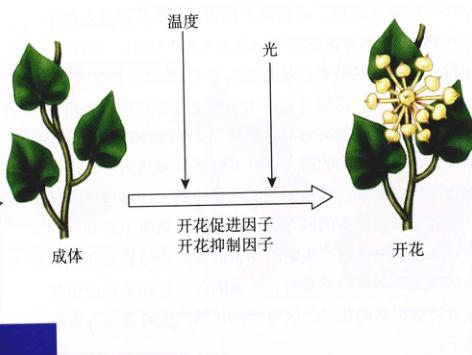
图 41.24 变形期 (a) 这棵栎树基部的枝条代表了发育的幼年期，冬天仍挂有树叶。基部的树叶在秋天不能形成离层而脱落。像这样可见的变化就是变形期的标志，但真正的检验是该植株能否开花。(b) 幼年期常春藤（左边）能生成不定根，叶子互生。成年期常春藤（右边）不能生成不定根，叶子形态也不同，在茎上呈螺旋状排列。
Page 17 / 原始页码 797
观察一下冬天的橡树，基部的树叶仍挂在枝条上，而高处的树叶则都落尽了（图 41.24a）。那些基部的树枝靠幼小的分生组织生长，它们对环境信号没反应和不落叶的事实说明它们是幼嫩的枝条，还没经历变形期。常春藤也有明显的幼年和成年生长阶段（图 41.24b）。幼枝的分生组织生成的茎组织能产生不定根附着在墙上。如果你观看那些很老的爬满常春藤的砖墙，你会注意到最上面的枝条都在往下掉。那是因为它们已经进入生长的成熟期，失去了生成不定根的能力。还有很重要的一点要记住，就是即使植物已经达到发育的成熟期，它仍有可能产生不产生生殖结构。要诱导开花，其他因素可能是必需的。
一般情况下，将植物由成熟阶段逆转为营养生长阶段要比诱导形态转变容易得多。运用赤霉素和严格的修剪都可以实现这种逆转。有关豌豆和拟南芥的实验证实，开花抑制是受基因控制的。拟南芥的胚花 (embryonic flower) 变异株一经种子萌发几乎就直接开花了（图 41.25），这与有关野生型等位基因抑制开花的假说相符。可能开花是一个默认的状态，但进化机制已经进化成延缓开花了。这一延缓使得植物能为生殖过程储存更多的能量。
诱导幼体向成体转变的最好例子就是把很多植物中都存在的控制开花的基因过度表达。LEAFY 基因是从拟南芥中克隆获得的，它的启动子被病毒的启动子所取代，致使 LEAFY 基因能够稳定、大量地被转录。这种重组基因后来被转入用于培养再生植株的白杨细胞中。当 LEAFY 基因在白杨中过度表达时，只要几周而不是几年就可以开花了（图 41.26）。植物的变形期既需要足够的信号，也需要感受信号的能力。有些植物的茎获得了接收一定强度信号的感受力，另外一些则获得了能够产生有效的促进性信号或者减少抑制信号的感受力。
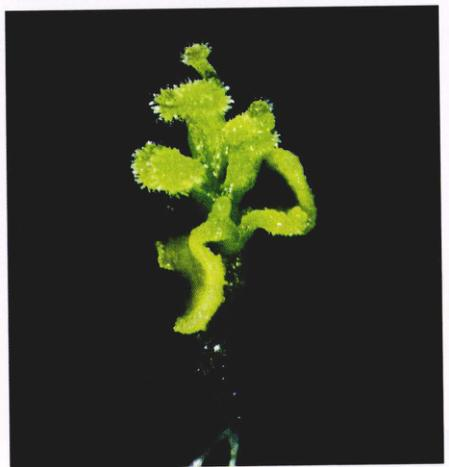
图 41.25 拟南芥的胚花基因可能抑制开花 胚花变异株在种子萌发后立即开花。这是一朵从根上长出的畸形心皮的异常花，花的其地结构也有缺陷。
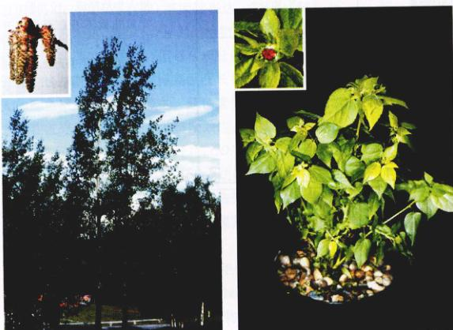
图 41.26 开花基因的过度表达能加速变形期的进程 (a) 通常一棵白杨要生长好几年才能开花。(b) 拟南芥开花基因 LEAFY 的过度表达，使转基因白杨快速开花。
Page 18 / 原始页码 798
41.3.2 诱导开花的途径
开花的三种遗传调控途径已经被确认：①光依赖途径；②温度依赖途径；③自主途径。环境能促进或抑制开花，但有些情况下，环境则保持相对中立。光是一个信号，标志着长日的夏季已经到来，气候温和，为光合作用条件已经适宜生殖。其他一些情况，植物利用光积累足够的蔗糖作为开花的信号。赤霉素很重要，它与春化作用 (vernalization) 途径（春化作用是为了开花而将种子或者芽冷却一段时间）有关。很显然，在大风雪中生殖过程是不可能成功的。假定生殖调控最初起源于更加恒定的热带环境，那么，当植物占领了更多的温带区域时，将会进化出许多受日照长度和温度控制的植物。植物可以主要依靠一个调控途径，但所有三种途径都会存在。复杂的开花途径已经从生理上得以剖析。目前关于开花变异株的研究使我们可以深入了解开花途径的分子机制。开花途径的冗余确保产生别的后代。
1) 光依赖途径
开花需要通过光合作用积累很多能量，因而所有植物的开花都需要光，但这有别于光周期 (photoperiodic) 或者光依赖的开花途径 (light-dependent flowering pathway)。大多数植物生长发育的很多方面都与一天24小时中昼夜的比率紧密相关（日长）。这给生物提供了一个机制，使其能对昼夜相对长度的季节性变化做出反应。白天的长度随季节而变，离赤道越远，变化越大。植物对日长的反应分为几种基本类型。当日长比临界日长短时，短日照植物 (short-day plant) 开花；当日长比临界日长长时，长日照植物 (long-day plant) 开花（图 41.27）。其他像金鱼草、玫瑰和许多原产热带的植物（如番茄），当它们成熟后，不管白天的长短，只要它们已经接受了正常生长所需的足够的光就能开花。这些植物被称为日中性植物 (day-neutral plant)。有些草（如印度草，Sorghastrum nutans）有两个临界光周期；日长过长或过短都不能开花。有些植物与长日照和短日照植物都有明显的不同。还有一些植物，白天的长短只影响开花的快慢。这些植物也依靠其他的开花调控途径，称为兼性长-短日照植物 (facultative long or short day plant)。园中的豌豆就是一个兼性长日照植物的例子。在所有这些植物中，实际上是暗期 (黑夜) 的长短而不是白日的长短起重要的生理作用。当非生物环境条件最佳时，有传粉者可供利用，而且与其他植物的资源竞争较少时，光作为信号可以促使植物开花。有些春季开花的、花期短的植物在树冠上的叶子生出之前就开花了，以防止叶子挡住光合作用所需的阳光。

图 41.27 日长如何影响开花 (a) 这种鸢尾是一种长日照植物；春季的短夜能诱导其开花。通常分布在北半球的一支黄花是短日照植物，秋季的长夜诱导其开花。(b) 如果冬季漫长的黑夜被人为地插进一段光照，一支黄花就不开花而鸢尾开花。尽管上述术语都提及白天的长短，但实际上是连续的黑夜决定了何时开花。
Page 19 / 原始页码 799
在中纬度地区，大多数长日照植物在春季和初夏开花，如苜蓿、鸢尾、莴苣、菠菜和蜀葵。短日照植物通常在夏天和秋季开花，包括菊花、一支黄花、一品红、大豆和许多野草。人们利用植物对日照长短的反应使经济作物在特定的时刻开花。比如利用温室控制光周期就可以使一品红赶在冬季节日的时候开花（图 41.28）。某些植物的地理分布也可能是由对日长的开花反应所决定的。
光周期是被一些不同形式的光敏色素感知的，也包括一种对蓝光敏感的分子——隐色素 (cryptochrome)。一个光受体分子的构象变化引发一连串的反应，最终导致花的生成。光与植物内部生物钟节律的生理节奏有关，而这种生物钟促进或抑制开花。在分子水平，光信号和花生成之间的空隙被快速填补。这种控制机制是很复杂的。这有一个例子，说明白天长短是如何影响拟南芥植物特异性开花基因的。拟南芥是兼性长日照植物，红外光和蓝光都会诱导其开花，红光则抑制开花。在长日照时，CONSTANS (CO) 基因被表达，在短日照时，该基因则不被表达。缺少 CO 基因的植物，即使在短日照条件下，其花期也不改变，但是在长日照条件下，却延迟了开花。这些变化是由于这段基因受长日照条件感知蓝光的光受体素的正调控导致的。隐色素似乎能阻止光敏素 B 在红光条件下对开花的抑制。简而言之，通过阻止抑制开花的基因可能促进开花。CO 基因是一个转录因子，它能启动其他基因如 LEAFY 表达的基因。正如讨论变形期时所说，LEAFY 基因是“告知”分生组织向开花转变的关键基因之一，我们会发现其他的开花途径也聚集在这个重要的基因上。
开花激素存在吗？ 追寻了50多年仍没有成功的开花激素已经成为植物学中的“圣杯” (The Holy Grail)。大量的证据表明，存在促进和抑制开花的物质。嫁接实验已经表明，这些物质是从叶子移动的，它们之间的相互作用不仅复杂，而且已证实涉及多种化学信使。这使得这一科学上、经济上都吸引人的研究变得非常困难。直到今天，开花激素的存在仍然只是一个假说，尽管我们知道 LEAFY 基因在植物的营养和生殖部位都能够被表达。显然，叶子收集的有关日照长短的信息传给了茎尖。假定有大量的开花途径，那么信号就更容易在叶和茎之间交流。我们也知道，根是能影响茎发育的开花抑制物的来源。
图 41.28 温室中对光周期的调控确保了短日照植物一品红在冬季节日时开花 注意，五颜六色的“花瓣”实际是苞叶片。即使经历了花诱导，要开出物种特异的花仍然需要许多发育过程。
2) 温度依赖途径
Lysenko 通过低温处理冬麦种子并在春天将其播种，从而解决了俄罗斯冬麦种子在田里腐烂的问题。春天播种使得种子不会由于漫长的冬季而腐烂在田里。冬麦不经过一段时间的低温，即春化作用 (vernalization)，是不会开花的。不幸的是，这一重要的科学发现引发了许多问题，包括俄罗斯遗传学家的错误论述。Lysenko 错误地做出结论：经过处理的种子获得的性状是可以遗传的，并且能使冬麦变成春麦。那时科学向政治偏移了，遗传学和达尔文的进化论被怀疑了半个世纪。抛开社会历史不谈，春化作用确实是很有价值的结论就是，低温能加速或促使很多植物开花，连同光的作用共同确保了植物在更佳的时刻开花。
春化作用可能对处于发育晚期的种子或植物体是必需的。拟南芥和大豆的变异株的研究表明，春化作用是一个可能与赤霉素有关的独立的开花途径。在这个途径中，抑制开花作用也可导致开花。在此途径中，某种基因产物的高水平表达阻止了赤霉素对开花的促进作用。当植物经受低温时，这种基因产物变少了，赤霉素的活性便加强了。我们知道赤霉素能提高 LEAFY 基因的表达。有一种观点认为，春化作用和自主途径经具有一个共同的交汇点，都影响赤霉素对开花的促进作用。Weigel 认为，赤霉素实际上与 LEAFY 基因的启动子相连接，所以它对开花的影响是直接的。赤霉素的浓度与温度之间的关系也值得研究。
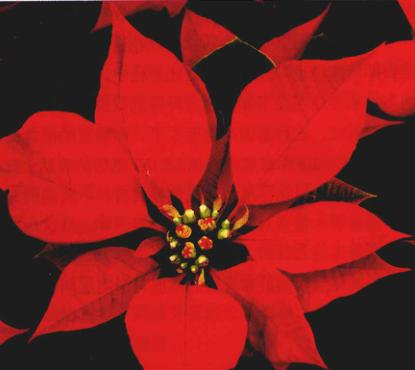
图 41.29 植物能够“计数” 当开花烟草的腋芽由下去截去主枝而解除顶端优势控制时，它们能产生与主枝存在时数目相当的节点 (a) 和 (b) (引自 McDaniel 1996)。
Page 20 / 原始页码 800
3) 自主途径
开花的自主途径 (autonomous pathway) 只依赖基本的营养而与外部的信号无关。可以猜想，这是进化的第一个途径。日中性植物通常主要依赖这种使植物“计数量”和“记忆”的自主途径。开花前，日中性的烟草能够生成具有相同节数的植株。如果这些植物的枝条在不同的部位被截去一段，然后分支会长出来，并产生与截去部分相同数目的节点（图 41.29）。在发育的某个时刻，茎接受指令决定 (determined) 开花（图 41.30）。当植株被嫁接时，开花烟草的上部腋芽会记住它们的位置，开花前，这个进入花决定期的顶端的茎尖只有4个节点。在其他一些物种，这种开花指令是不稳定的或者发生得较迟。
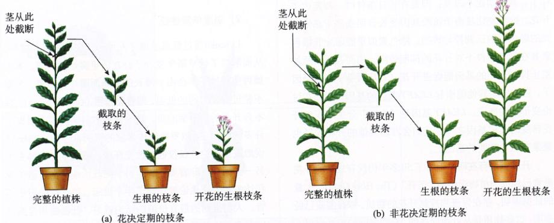
图 41.30 植物能记忆 在开花过程的某时刻，嫩枝开始向花发育，这被称为花决定。(a) 截取一段将进入花决定期的枝条植于花钵中，它们“记得”自己的位置，能长出与原先植株上同样数量的节，然后开花。(b) 那些没有进入花决定期的枝条则不记得它们留有几个节，所以会重新计数，像幼苗一样发育，然后开花 (引自 McDaniel 1996)。
Page 21 / 原始页码 801
这些枝条是如何知道它们的位置在哪儿以及如何在某种程度上“记住”了那些信息？很显然有来自根的抑制信号存在。如果将无底的花盆一个接一个地叠在一株生长着的烟草植株上，且里面填满土壤，开花会由于不定根的形成而延迟（图 41.31）。摘去叶子的对照实验表明，延缓开花的原因是根的增加，而不是叶的摘除。当以自主途径以及其他途径开花时，促进和抑制开花信号之间的平衡能够调控开花时间。
人们已从器官或植物整体水平来研究开花事件，通过改变环境并确定相应反应是否影响开花。如何将开花决定机制与分子水平的变化联系起来呢？在拟南芥中，开花决定与 LEAFY 基因的表达量提高有关，而且在另一神开花基团 APETALA1 表达之前就已经发生。由于三种开花途径明显都与 LEAFY 基因表达水平增加有关，因此这种开花决定事件将出现在那些已在各种开花途径之间获得良好平衡的物种中。
41.3.3 特征基因及花分生组织与花器官的形成
拟南芥和金鱼草是确定花开基因并研究它们之间相互作用的很有价值的模式生物系统。前面章节讨论的3种途径导致成熟的分生组织形成花分生组织，这一变化是通过激活或解除花分生组织特征基因 (floral meristem identity gene) 的抑制而实现的（图 41.32）。LEAFY 和 APETALA1 基因是最重要的两个花分生组织特征基因。它们确立了花分生组织，随后又启动了花器官的特征基因。花器官特征基因决定了花分生组织中四轮同心圆的花器官，由外向内依次是尊片、花瓣、雄蕊和心皮。Meyerowitz 和 Coen 共同提出了一个 ABC 模型，用来解释3类器官特征基因如何特定形成4种不同的花器官（图 41.33）。
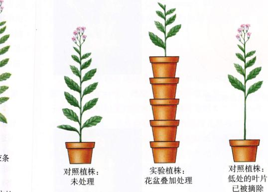
图 41.31 抑制开花 当将无底的花盆一个接一个地叠在一株生长着的烟草植株下时，植株形成不定根，结果开花延迟。开花延迟是由于根而不是由于叶片的摘除引起的。实验组为叠加了花盆的植株，对照组为实验植株同位点以下叶片摘除的植株。
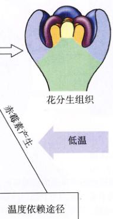
图 41.32 开花的模式 光依赖途径、温度依赖途径和自主开花途径通过抑制开花抑制因子并激活花分生组织特征基因，从而促使成熟的分生组织形成花分生组织。
Page 22 / 原始页码 802
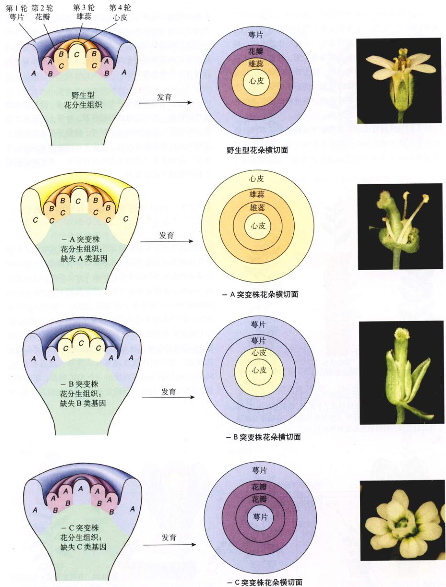
图 41.33 花器官分化的 ABC 模型 每轮标记的字母表明哪类基因有活性。当 A 功能缺失时 (- A)，C 基因表达扩展到第1轮、第2轮。当 B 功能缺失时 (- B)，两轮只有 A 基因有功能，两轮只有 C 基因有功能；没有哪轮具有双重基因作用。当 C 功能缺失时 (- C)，A 基因表达扩展到内部两轮。这些基因表达模式新的组合将改变每轮形成的花结构（1991年由 Coen 和 Meyerowitz 提出的模型）。
Page 23 / 原始页码 803
ABC 模型提出，3类花器官特征基因 (A、B、C) 特异决定了花的四轮花器官。通过研究突变株，科学家们已经确认：①A类基因单独决定尊片；②A类和B类基因共同决定花瓣；③B类和C类基因共同决定雄蕊；④C类基因单独决定心皮。
ABC 模型的魅力在于，它是可以通过将花器官特征突变株进行不同的组合而得到验证的。每一类基因都在两轮花器官中表达，可生成4种不同的基因组合产物。一旦某一类基因丢失，异常的花器官就会在可预知的部位出现。
认识到这仅仅是成花的开始是很重要的。这些器官的特征基因作为一些转录因子，启动更多的真正产生花的三维结构的基因。有些基因还涉及为花瓣“着色”。花色素的生化途径导致花色素苷 (anthocyanin) 颗粒在液泡中的积累。这些色素可以是橘黄色的、红色的或者紫色的，真正的颜色是受 pH 值的影响的。
配子的形成
心皮中胚珠出现的历史比被子植物还古老。花的各部分是变态的叶子，雌配子体存在于胚珠里。子代是由子房中的胚组织发育而来的。胚囊母细胞发育并经减数分裂形成配子。通常会有两层珠被包围在胚囊的周围，将来形成种皮。那些负责启动和形成珠被的基因已经得到确认，其中有些基因也会影响叶子的结构。本章将重讨论花这一生殖结构的复杂而精致的形成过程。实际上这是一个变态过程，但是，在胚囊母细胞发生的有丝分裂向减数分裂的微妙变化导致了单倍体的发育，产生配子的配子体也许更加重要。同样的，雄蕊中花粉的形成也是如此。就像我们在第42章看到的那样，花为产生配子的单倍体世代提供环境，而且增加了不同植株（有时候是同一植株）的雌雄配子结合的可能性。
41.4 很多对环境的短期反应不需要生长
在此之前，我们重点讨论了植物对环境改变的反应，包括生长长期和变形期。不是所有的植物都有如此广泛的反应。大型食肉动物、微生物、水和风经常给植物施加快速直接的压力，因此，植物也必须做出快速有效的反应。没有时间用于生长，植物则激活许多其他的反应。比如，很多环境信号刺激植物在原地快速可逆地运动。叶子的快速闭合能吓倒一个潜在的捕食者。叶子的闭合减少了可以进行蒸腾作用的表面积，从而减少了水分分散。有些植物的原地运动可被未知的环境信号激发。另外有些运动则与每日的内部节律息息相关，这些节律由周期性的环境信号，如光和温度等造成。植物没有常规意义上的神经系统，但是，有些快速的信号传递是由于电荷以膜离子交换波的方式通过器官移动的结果。与动物中常见的信号传递不同，这些信号通过改变细胞的膨压而产生运动。
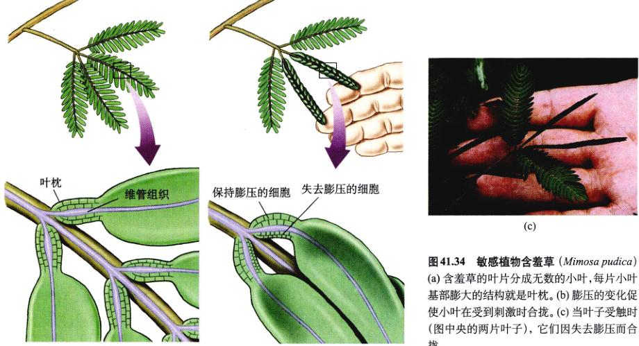
图 41.34 敏感植物含羞草 (Mimosa pudica) (a) 含羞草的叶片分成无数的小叶，每片小叶基部膨大的结构就是叶枕。(b) 膨压的变化促使小叶在受到刺激时合拢。(c) 当叶子受触时 (图中央的两片叶子)，它们因失去膨压而合拢。
Page 24 / 原始页码 804
41.4.1 膨压运动
膨压 (turgor) 是由于水分子扩散进入细胞内而产生的压力，如第39章所述。如果膨压细胞（具有膨压的细胞）失水，细胞就可能崩溃，从而引起植物的运动；反过来，水分子进入萎蔫的细胞也能引起运动，因为细胞会更加膨胀。
许多植物（包括某些豆科植物）的叶片会由于触碰或者其他类似的刺激而表现出运动。受到刺激后，叶子取向的改变主要与叶枕 (pulvini) 中迅速的膨压变化有关。叶枕是位于叶片或小叶基部的多细胞膨大部分。当有叶枕的叶子，如有些敏感植物——含羞草 (Mimosa pudica) 的叶子，受到风、热、接触或者偶然的强光刺激时，一个电信号将以极快的速度从受刺激小叶从一侧的细胞进入另一侧的细胞间隙时，电信号便转换成化学信号。叶枕一侧膨压的消失引起叶片的合拢。敏感植物的叶片和小叶运动非常快；叶片受触后 1~2s 内就会合拢（图 41.34）。叶片和小叶合拢 15~30 min 之后，水分又通流回到常先失水的细胞，叶片就恢复到原来的位置。
有些具有类似机制的植物的叶片会跟踪太阳，它们始终与太阳成一定的角度。但是，这种取向是如何造成的，人们却知之甚少。这些叶片能很快地运动（转速每小时 15°），这种运动使光合作用达到最佳，与人们设计的跟踪太阳的太阳能板类似。
有些最常见的可逆的变化在一些白天“开放”、晚上“关闭”的叶片和花中也能看见。比如，花在下午4点钟开放，夜樱草花晚上开放。植物的叶片也表现出每日位置的移动。叶片和花瓣的取向可能由于膨压运动 (turgor movement) 而改变。大豆的叶片在白天由于叶枕充满膨压而成水平，但是到了夜间失去膨压之后，就多少有点趋向垂直了（图 41.35）。这些睡眠运动可减少夜间蒸腾作用造成的水分损失，但白天又使光合作用表面积最大化。上述例子中，植物的运动都与内部节律息息相关。
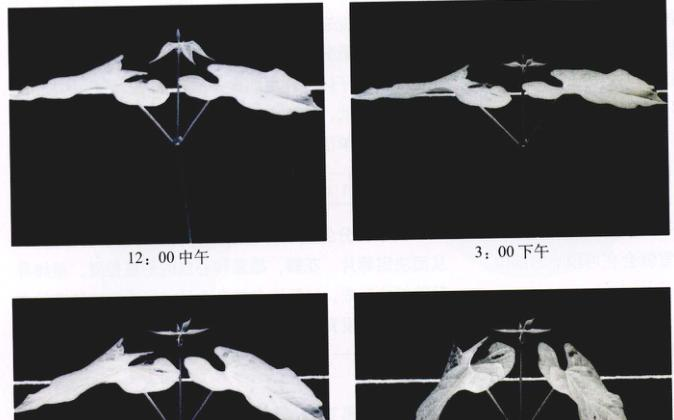
图 41.35 豆类叶子的睡眠运动 豆科植物的叶子在白天水平伸展，夜间则下垂。叶子后面的细线表示水平面。
昼夜节律钟
叶子是如何知道何时该“睡觉”的呢？它们有内在的昼夜节律钟 (circadian clock)，以大约 24 h 为一个周期形成节律（实际上更接近 22 h 或者 23 h）。虽然有长短不一自然发生的节律，昼夜节律 (circadian rhythm) 却由于地球上的昼夜循环尤其普遍。法国天文学家 Jean de Mairan 在 1972 年第一次确认了昼夜节律。他研究了一种敏感植物，该植物除了有受触反应外，叶子和小叶在夜间就像上面所提到的大豆一样关闭着。当 de Mariran 把植物放在完全黑暗的环境中，结果它们像在昼夜交替的环境中一样依旧“睡”、“醒”交替。这是昼夜节律的四大特征之一：在没有外界刺激时它仍然起作用。它必须持续大约 24 h，并能重置（当你旅行到一个不同时区时，就会有时差恢复的切身体会）。第4个特征是生物钟能补偿温度的差异。你考虑一下你所知道的有关生化反应，这是非同独特的。当温度变化时，大多数反应的速率会显著地变化。生物钟在很多多细胞体内都存在，好像已经独立进化出了多种时间。生物钟的机制还不是很清楚，但是在分子水平上的研究还是很多活跃的。
Page 25 / 原始页码 805
41.4.2 植物的防御反应
植物和其他生物之间的相互作用可能是有益的（像固氮菌和菌根），也可能是致病的。从进化的角度看，这两类类型的关系可能仅仅如同同一枚硬币的正反面。相互作用有许多共同的方面，是相互传递信号并产生反应的两个物种协同进化的结果。在病原体的例子中，微生物或者害虫是“获胜者”，至少在进化的那段时间。第38章我们讨论了植物为防止入侵而生成的表面防护层，本章将重点放在受到微生物和动物攻击之后分子水平的反应。
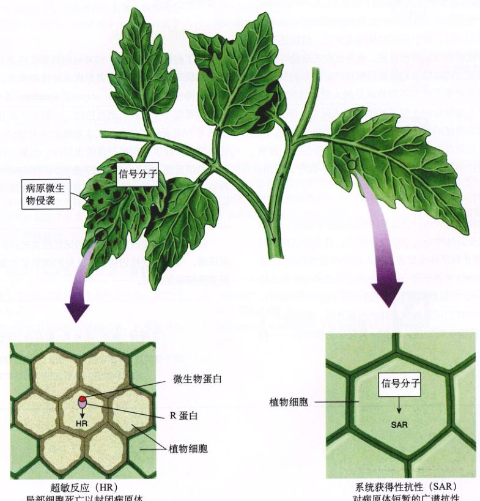
图 41.36 植物的防御反应 在基因对基因的反应中，触发了级联反应，导致局部细胞死亡（HR 反应）以及植物其他部位的长期的抗性 (SAR)。
1) 识别入侵者
半个世纪之前，Flor 提出存在一种植物抗性基因 (resistance gene, R)，其产物与病原体的无毒基因 (avirulence gene, avr) 相互作用，被称为“基因对基因” (gene for gene) 模型，在遭受微生物、真菌和害虫侵害的不同物种中，已经克隆了几对 R 基因和 avr 基因。农业生产上可以通过增加某些基因来保护植物，由此可能带来的经济利益一定程度上推动了上述基因的研究。现在，人们对于 R 基因识别病原体后的信号传导途径已经了解了很多。这些途径导致超敏反应 (hypersensitive response, HR)，致使侵染源附近的细胞快速死亡并且形成长久的抗性（图 41.36）。除了基因对基因的反应，植物还有病原体和机械创伤的防御反应。有些反应的途径可能相似，细胞壁上的寡糖也可能是识别和产生信号的分子。我们在把重点放在植物界以外的入侵者的同时，对于有关寄生植物如何入侵其他植物的认识也在加深。寄主根毛释放特定的分子，寄生植物识别并做出反应。有关寄主是如何反应的，目前知之甚少。迄今为止，被激活的不同防御基因 (defense gene) 好像不起什么作用。
Page 26 / 原始页码 806
2) 对入侵者的反应
当植物受到攻击并通过基因对基因的识别后，超敏反应导致侵染处附近的细胞快速死亡，将受伤的组织封闭起来，防止病原体或者害虫进入植物的其他部位。生成的 H2O2 和 NO 可能引起一系列的反应并最终导致宿主细胞的局部死亡。虽然病原体已经进化出了抗氧化的能力，但 H2O2 和 NO 仍可能对病原体产生副作用。植物还产生了其他的抗微生物物质，包括一种化学防御物质——植物抗毒素 (phytoalexin)。大量与致病有关的基因 (PR 基因) 被表达，所形成的蛋白质或者作为一种抵抗微生物的物质，或者引发其他保护植物的反应。
一旦有害虫入侵（没有 R 基因识别时），入侵处的细胞壁就发生变化，在一定程度上阻止病原体或者害虫进一步深入植株。在这种情况下，超敏反应不再发生，入侵处的植株细胞也不会自毁。
当昆虫蚕食树叶时，也能刺激防御反应。机械性的伤害引起具有类似成分的反应发生，但这利反应往往更慢一些。从进化的角度看，这与昆虫口中的信号源激发的反应是不一样的。这种反应应该确切地称为受伪反应。受伪反应对应及切割或者其他机械性组织破坏的植物实验提出了挑战。因此，做对照实验是非常重要的，以确保你得到的结果正是你所需的，而不是仅仅观察到一个植株自身的受伤反应。
3) 预防未来的打击
除了超敏反应 (HR) 和其他的局部反应之外，植物还能对病原体和害虫的侵害形成系统的反应。这就是系统获得性抗性 (systemic acquired resistance, SAR)。多种途径都能导致这种广谱性抗性，一般能持续几天。这些诱导 SAR 反应的信号包括水杨酸和茉莉酸。SAR 反应使植物再受侵害时能够迅速做出反应。但是，它不像人体的免疫反应，抗体（蛋白质）能够识别特定的抗原（人侵蛋白），而且能在体内持久存在。SAR 反应既没有特异性，也不能持久。
Page 27 / 原始页码 807
小 结
41.1 植物的生长经常受环境因素的影响
- 植物的向性是植物对外界面信号——如光、重力或者接触的直接的生长反应。
- 休眠是植物使自身安然度过不适宜季节或者干旱期的适应。
41.2 影响植物生长的激素与环境密切相关
- 茎尖的生长素向背光面移动，促进背光面细胞的伸长，导致茎向光弯曲。
- 细胞分裂素对植物有丝分裂和细胞分裂是必需的。它们促进侧芽的生长，抑制侧根的生成。
- 在大多数植物中，赤霉素与生长素共同作用促进茎的伸长。它们也可加速种子的萌发，打破芽的休眠。
41.3 环境影响开花
- 茎分生组织由生长期变为成熟期的过程称为变形期。在变形期，植物获得产生开花信号或者感知信号的能力。
- 光依赖途径利用与生物钟相关的光感受体感应到的信息决定黑夜长短是否有利于开花。
- 自主途径不依赖于环境信号。来自根和叶内部的开花抑制因子以及来自叶的促进因子在植物体内不停地运动。
41.4 很多对环境的短期反应不需要生长
- 环境信号引起的膨压改变能保护植物，调控气孔的开关。
- 膨压的变化引起其他可逆的运动，这些运动受内部生物钟的调节。
- 植物能在细胞、组织或者器官水平，以及整个植物体水平上识别入侵者，并做出反应。
问 题
- 一般而言，植物哪部分具有正的向光性？这种反应的适应性意义又何在？
- 生长素如何影响植物细胞壁的可塑性？
- 多数细胞分裂素由植物的哪部分产生？细胞分裂素是由什么生物分子演变来的？
- 矮小植物可能缺少哪种植物激素？
- 植物经历变形期后，虽然成熟了，但仍然不开花。你如何才能使此植物开花？
- 如果你最近从加拿大移居到墨西哥，并带有一些你喜欢的植物种子。它们能够萌发并长出漂亮的叶子，但无法开花。这是出了什么问题？
- 敏感植物，如含羞草的叶子受触之后，细胞有何反应？
- 植物如何避免病原体以及动物的侵害？
媒体资源
- 植物的运动
- 激素
- 学生研究：植物对环境压力的生长反应
- 技能测验：植物激素
- 光周期
- 学生研究：开花植物的选择
- 技能测验：开花对白昼长度的反应
- 植物入门